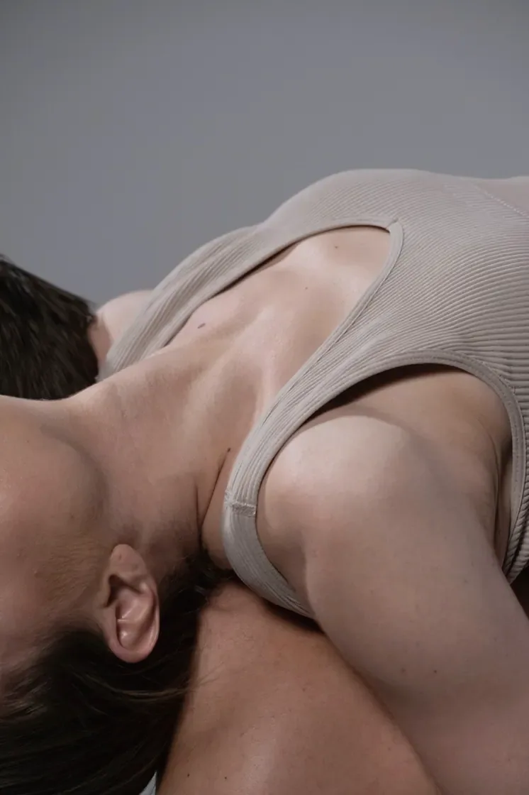
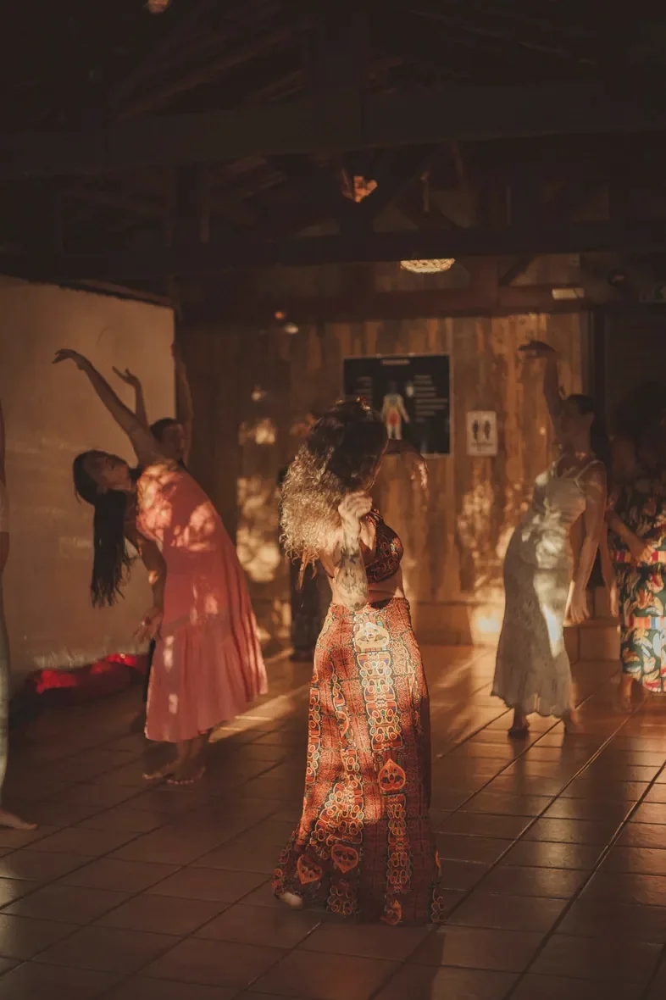
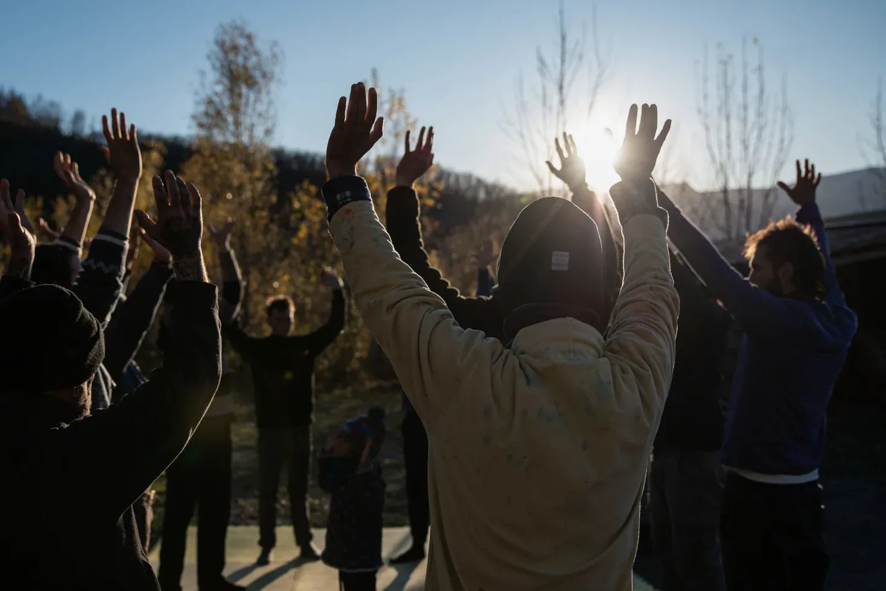
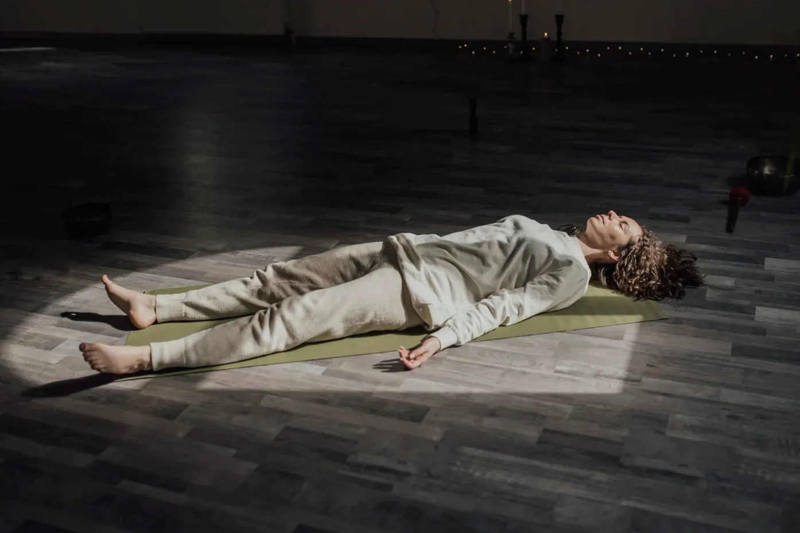
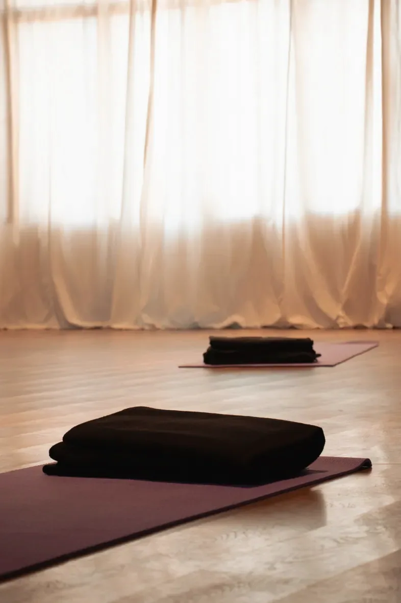

RESPIRAR
Conhecer a tua respiração e aprender a usá-la para lidar com a pressão, recuperar o foco e descansar melhor.
Começa por perceber como respiras agora.
Na ESSEN.CIA trabalhamos com respiração consciente e movimento, em sessões individuais e de grupo.
Conhecer as sessõesRespiras milhares de vezes por dia. Quase nunca reparas como.
Quando estamos sob pressão, o corpo responde. Os músculos ficam tensos, a atenção estreita-se e a respiração tende a ficar mais rápida e curta.
A respiração acontece sozinha, mas podemos mudar o seu ritmo de forma consciente. Esse ritmo influencia o sistema nervoso autónomo, que participa na resposta ao stress.
Respirar de forma lenta e confortável pode ajudar a baixar a ativação do corpo e a recuperar a calma e a atenção.
Não se trata de eliminar o stress nem de controlar as emoções. Trata-se de reconhecer os sinais do corpo e ter mais opções para responder.
Na ESSEN.CIA, a respiração é o ponto de partida. A partir dela, trabalhamos também o movimento, as sensações e as emoções.
Três dimensões do nosso trabalho. Podem combinar-se na mesma sessão.
Conhecer a tua respiração e aprender a usá-la para lidar com a pressão, recuperar o foco e descansar melhor.
Começa por perceber como respiras agora.
Usar a respiração, o movimento e a atenção ao corpo para reconhecer sensações e emoções.
Repara onde ficas tenso e o que muda quando respiras.
Conhecer melhor as tuas reações e os teus padrões, através da experiência e da reflexão.
Observar o que sentes ajuda a perceber como reages.



Conhece as sessões individuais e de grupo, ou marca uma conversa gratuita para perceberes o que faz sentido para ti.
Conhecer as sessõesHá várias razões para trabalhar a respiração: lidar com a pressão, ganhar foco, melhorar o desempenho, conhecer o corpo ou simplesmente parar.
As sessões combinam respiração consciente, atenção ao corpo e movimento. Adaptamos a prática ao teu objetivo, à tua experiência e às tuas necessidades.
Marcar conversa gratuita
Começamos por perceber o que procuras e como estás. A partir daí, trabalhamos o que fizer sentido para ti: hábitos respiratórios, foco, resposta ao stress, consciência corporal ou emoções.
O ritmo é o teu. Podes marcar uma sessão pontual ou continuar o trabalho, sem compromisso com um programa fechado.
Condições e valores por contacto.
Quero saber mais sobre as sessões individuaisSessões presenciais que combinam respiração consciente, movimento e atenção ao corpo. Algumas são regulares; outras partem de um tema.
Cada sessão inclui a orientação da prática e tempo para integrar o que foi vivido. Não precisas de experiência anterior e não tens de partilhar o que sentiste.
Os OneDay Events ocupam um dia inteiro, com uma sessão de manhã e outra à tarde. Tema, programa e local são anunciados em cada edição.
Datas, locais e vagas anunciados para cada sessão.
Pedir informações sobre as próximas sessõesFacilitamos sessões e workshops de respiração consciente para empresas, clubes e equipas desportivas. O foco são ferramentas práticas de atenção, autorregulação, gestão da pressão e recuperação.
No desporto, podemos trabalhar a concentração, a pressão competitiva e a recuperação. Não prometemos resultados de desempenho: trabalhamos as condições que os apoiam.
Pedir informaçãoFerramentas práticas de respiração, atenção e recuperação para equipas.
Até 12 pessoas. Proposta e valores por contacto.
Pedir informação ↗Para grupos maiores ou objetivos específicos. Conteúdo, duração e número de participantes definidos com a organização.
Condições sob consulta.
Pedir proposta ↗Se não sabes que sessão escolher, começamos por uma conversa curta e gratuita. Esclarecemos dúvidas e vemos que formato faz sentido para ti.
Antes da sessão, explico como funciona a prática e que cuidados ter. Durante a sessão, podes adaptar os exercícios, descansar ou parar. No fim, reservamos tempo para falar do que viveste e do que podes levar para o dia a dia.
Marcar conversa gratuita
Começamos pela respiração. Observamos como respiras, o que sentes no corpo e como reages às situações do dia a dia.
Usamos exercícios respiratórios, movimento, atenção às sensações e reflexão. Escolhemos as práticas de acordo com o que procuras, a tua experiência e os teus limites.
O trabalho organiza-se em três dimensões: Respirar, Sentir e Explorar. Podem combinar-se. Não são etapas obrigatórias nem serviços separados.
Como respiras quando estás sob pressão? E quando queres descansar?
Observamos os teus hábitos respiratórios e experimentamos exercícios simples para ajustar a respiração de forma confortável.
Estas práticas podem ajudar-te a lidar com a pressão, manter a atenção e recuperar depois de momentos exigentes.
Não há uma forma de respirar que sirva para todos. O importante é perceber como respiras e o que te é útil.
Nem sempre reparamos no que sentimos no corpo. Podemos passar o dia com os ombros tensos, a mandíbula contraída ou a respiração presa.
Usamos a respiração, o movimento e a atenção às sensações para reconhecer estas respostas e perceber como se ligam às emoções.
Podemos trabalhar a postura, o apoio no chão, o movimento livre ou orientado e a expressão emocional. Cada pessoa decide até onde quer ir.
Não é preciso provocar emoções nem partilhar o que sentes.
Às vezes queremos perceber melhor as nossas reações, os pensamentos que se repetem ou a forma como lidamos com emoções difíceis.
Combinamos respiração, movimento, silêncio e reflexão para reconhecer crenças, hábitos e padrões que influenciam as nossas escolhas.
Algumas sessões podem ser emocionalmente intensas ou ter um significado pessoal ou espiritual. Não procuramos provocar estados especiais nem dizer-te o que a experiência significa.
Escolhemos as práticas de acordo com a tua preparação e com o que é adequado para ti.
Uma sessão é um espaço para experimentar e observar como respiras, como o corpo reage e como te sentes.
O objetivo é levar essa atenção para o dia a dia: reparar mais cedo na tensão, nas mudanças de estado e na forma como reages ao stress.
Com prática regular, ganhas mais margem para escolher como respondes.
Não é uma mudança que acontece numa sessão. Constrói-se com prática e continuidade.
Uma conversa curta e gratuita ajuda-te a perceber que sessão faz sentido para ti.
Marcar conversa gratuita Conhecer as sessõesSou o Domingos Frazão, fundador da ESSEN.CIA. Facilito sessões de breathwork e práticas de consciência corporal.
Durante mais de 30 anos trabalhei em tecnologia, gestão, desenvolvimento de negócio e coordenação de projetos. Foram anos de decisões, responsabilidade e contacto com pessoas em contextos exigentes. Vi de perto como vivemos a pressão e o pouco espaço que deixamos para perceber o que se passa connosco.
Em paralelo, fiz um percurso pessoal: o movimento, o desenvolvimento pessoal, a música e o som. Aos poucos, a respiração e a consciência corporal passaram a ocupar o centro.
Fiz formação em breathwork com a INJOY e com a Oxygen Advantage, e o percurso Working With People. Participei em equipas de suporte a retiros e trabalhei com práticas somáticas. Isso ensinou-me a escutar e a acompanhar o que surge numa sessão individual ou de grupo.
Hoje, na ESSEN.CIA, junto estas experiências de forma simples e prática. Facilito sessões de respiração consciente, movimento e exploração corporal, adaptadas a cada pessoa e ao seu contexto.
Às vezes o ponto de partida é concreto: conhecer a respiração, lidar com a pressão, ganhar foco, recuperar energia ou abrandar. Outras vezes, a sessão abre espaço à expressão emocional e ao autoconhecimento.
Não acredito numa técnica que sirva para toda a gente, nem numa experiência com um resultado definido à partida. O meu papel não é interpretar o que cada pessoa vive nem indicar-lhe um caminho. É estar presente, propor ferramentas quando fazem sentido e criar condições para que cada pessoa explore e integre o que é importante para si.
Participo em equipas de suporte a retiros e em sessões de grupo com outros facilitadores. Estou disponível para colaborar com profissionais e organizações que trabalhem a respiração e o corpo de forma responsável.
Queres conhecer as sessões ou tens uma proposta de colaboração? Entra em contacto.
Marcar conversa gratuita Propor colaboraçãoQueres saber mais sobre uma sessão, conhecer as próximas sessões de grupo ou propor uma colaboração? Envia uma mensagem e diz-me o que procuras.
Se fizer sentido falarmos, combinamos o dia e a hora. A conversa é curta, gratuita e não inclui prática.
Preenche os campos para preparar um email. O teu programa de correio eletrónico abrirá uma mensagem pronta a enviar. O site não guarda estes dados.